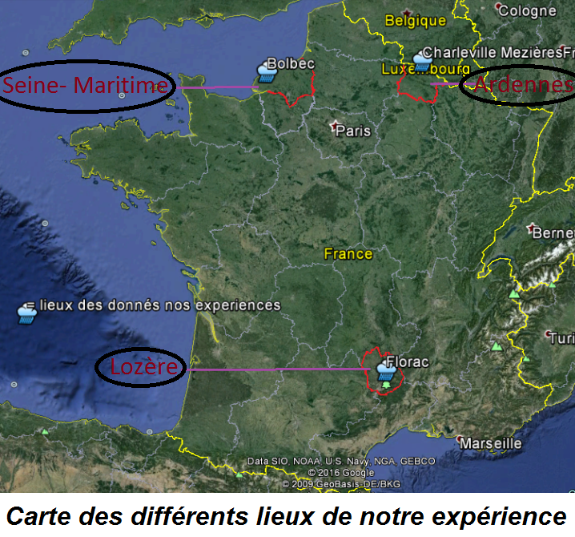
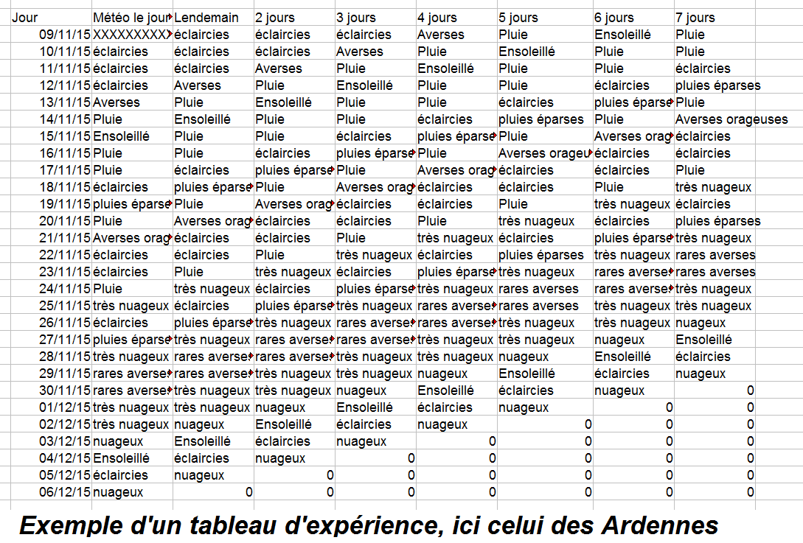

Explications
Dans le but de vérifier la fiabilité de leur prédiction en fonction de leur échéance, nous avons réalisé une expérience répartie sur les trois zones climatiques de la France: la Seine-Maritime, avec son climat océanique, les Ardennes, avec leur climat semi-continental et la Lozère, avec sa partie basse ayant un climat méditerranéen. Pendant un mois, nous avons donc observé les prévisions météorologiques de trois endroits différents : Bolbec, en Seine-maritime, Florac en Lozère et Charleville-Mézières aux Ardennes. Tous les jours nous prenions les prévisions données par Météo france pour le lendemain, 2 jours à l'avance, 3jours à l'avance... jusqu'à une semaine en avance pour observer si ces prévisions sont fiables et déterminer à partir de quand l'on peut s'y fier
Nous avons tous trois remplis un tableau pour une région en particulier en prenant les valeurs données par le site. Ces valeurs sont réparties en 9 catégories que l'on a numérotées de 0 à 8: averses orageuses, averses, rares averses, pluie, pluies éparses, très nuageux, nuageux, éclaircies et enfin ensoleillé. Ensuite, nous avons analysé ces résultats pour voir le pourcentage de fiabilité de chaque échéance et de chaque lieu en particulier. Tous ces pourcentages sont ordonnés dans le graphique ci-dessous.